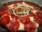
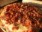
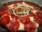
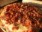

Margherita Margherita |
 Mussarela Mussarela |
 Portuguesa Portuguesa |
 Calabresa Calabresa |
 Califórnia Califórnia |
Pepperoni |  Quatro queijos Quatro queijos |
Bacon |
A variedade de coberturas que se pode colocar sobre uma pizza é quase infinita, entretanto, algumas preparações são tradicionais e tem fiéis seguidores:
| Margherita |
Mussarela |
Portuguesa |
Calabresa |
| Califórnia |
Pepperoni | Quatro queijos |
Bacon |